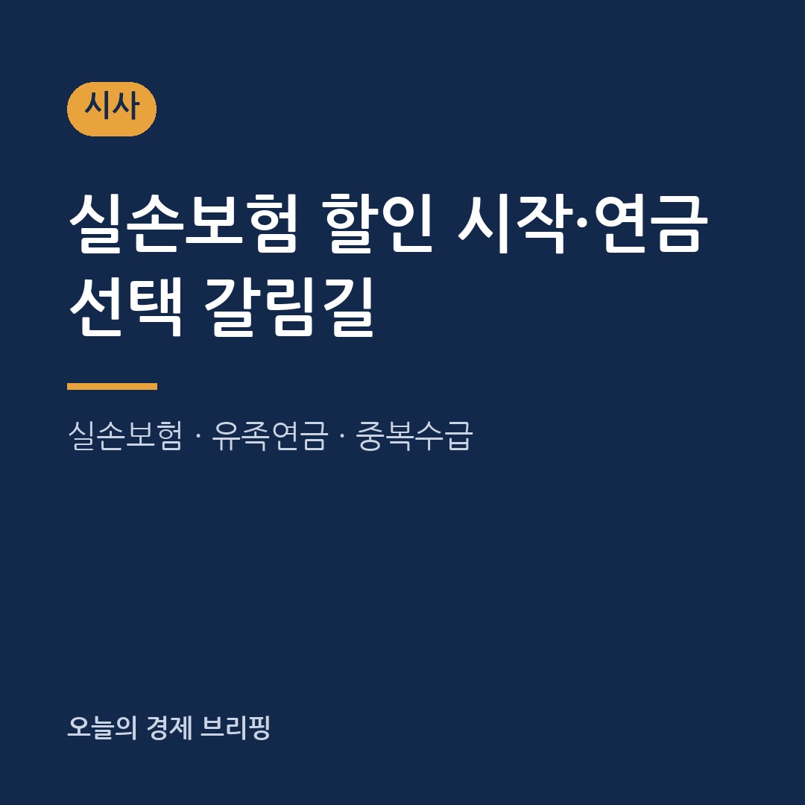

2026-11-23-1232-naver 발행 키트 · 이 페이지는 검색에 노출되지 않습니다.
제목
카테고리
시사태그
본문 (그림·표 포함)
휴대폰 블로그 앱에서는 그림이 같이 붙지 않을 수 있어요. 그때는 [글자만 복사] 후 아래 이미지를 저장해 [그래프1]·[표1] 자리에 첨부하세요.

매달 통장에서 빠져나가는 보험료 보면서 한숨 쉬어 본 적 있으시죠? 그리고 부부가 함께 국민연금을 붓고 있다면, 나중에 내 연금이 어떻게 되는지도 궁금하셨을 거예요. 오늘은 이 두 가지를 같이 짚어 볼게요.
▶ 오늘부터 실손보험 할인제도가 시작됐어요
오늘(11월 23일)부터 '실손보험 할인제도'가 시행됐어요. 5세대 실손으로 갈아타는 가입자에게 보험료를 3년 동안 50% 깎아 주는 내용이에요.
실손보험(병원비 중 내가 실제로 낸 돈을 보전해 주는 보험)은 한번 가입하면 오래 들고 가는 경우가 많잖아요. 그래서 매달 내는 금액이 부담된다는 분들이 많거든요.
매일경제는 이 할인을 받으면 3년간 550만원 정도를 아낄 수 있다고 소개했어요. 다만 이 금액은 기사 속 사례 기준이라, 내 계약에서 얼마가 줄어드는지는 따로 확인해야 해요.
실손보험 할인제도 한눈에
| 항목 | 내용 |
|---|---|
| 시행일 | 11월 23일 |
| 대상 | 5세대 실손으로 전환하는 가입자 |
| 혜택 | 보험료 50% 할인 |
| 기간 | 3년 |
| 확인처 | 가입한 보험사 |
출처: 매일경제
▶ 갈아타기 전에 이것만은 확인하세요
할인이 3년 동안이라는 점이 핵심이에요. 3년이 지나면 할인이 끝나니까, 그 이후의 보험료도 같이 생각해 봐야 해요.
그리고 전환하면 보장 내용이 지금 계약과 달라질 수 있어요. 어떤 점이 달라지는지는 제가 이번 자료로 확인하지 못했어요. 그래서 가입한 보험사에 직접 물어보고, 지금 보험과 나란히 비교해 본 뒤에 결정하시길 권해요.
▶ 맞벌이 부부라면 내 연금도 꼭 보세요
두 번째는 국민연금 이야기예요. 평생 보험료를 꼬박꼬박 냈는데도, 배우자가 먼저 세상을 떠나면 내 연금과 유족연금(가입자가 숨졌을 때 남은 가족에게 주는 연금)을 둘 다 온전히 받지는 못해요.
내 연금을 선택하면 유족연금은 30%만 받을 수 있어요. 반대로 유족연금을 선택하면 내 연금은 지급이 정지돼요.
이런 중복수급 대상자가 최근 4년 사이 68% 늘어서 20.8만명이 됐다고 해요. 맞벌이가 늘고 노후 준비를 오래 해 온 분이 많아졌다는 뜻으로 읽혀요.
연금 중복수급, 무엇을 고르면?
| 선택 | 받는 것 | 내 연금 |
|---|---|---|
| 내 연금 선택 | 내 연금 + 유족연금 30% | 지급 |
| 유족연금 선택 | 유족연금 | 지급정지 |
출처: 매일경제
▶ 어느 쪽이 유리한지는 내 연금 액수에 달렸어요
어느 쪽을 고를지는 내 연금과 유족연금이 각각 얼마인지에 따라 달라져요. 이 부분은 자료에 구체적인 계산이 없어서 제가 딱 잘라 말씀드릴 수 없어요.
해당될 것 같다면 국민연금공단에 문의해서 내 경우의 예상 금액을 미리 확인해 보세요. 선택하기 전에 숫자를 직접 보는 게 가장 확실해요.
▶ 한 줄 정리
오늘 시작된 실손보험 할인은 3년간 50%, 연금은 내 연금과 유족연금 중 선택이 필요하다는 점만 기억해 두세요. 여러분은 보험료나 연금 중 어느 쪽이 더 고민이세요? 댓글로 알려 주세요.
출처 (본문 맨 아래에 붙여넣기 권장)
- 매일경제, 오늘부터 실손보험료 부담된다면 주목할 제도 관련 기사, https://www.mk.co.kr/news/economy/12215850 - 매일경제, 국민연금 중복수급과 유족연금 관련 기사, https://www.mk.co.kr/news/economy/12215806